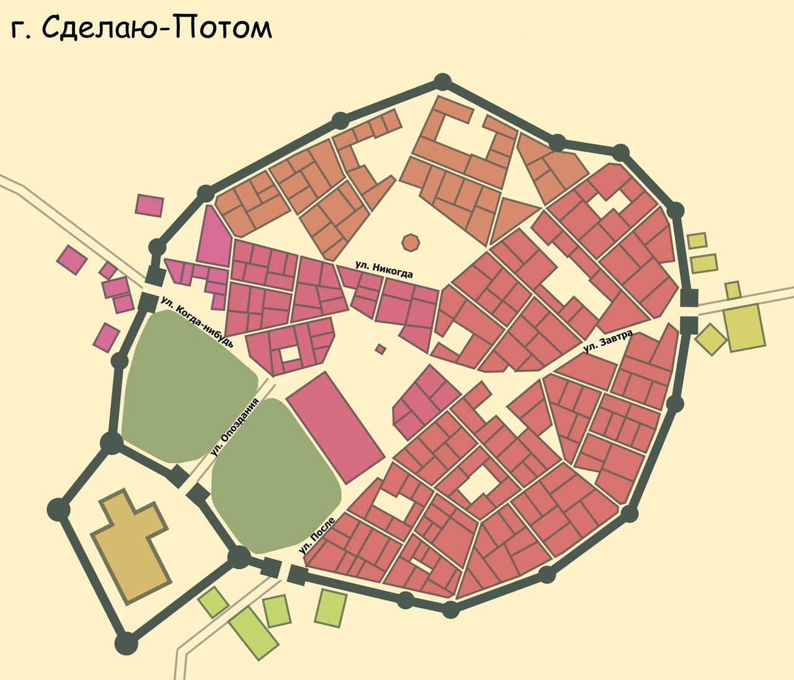
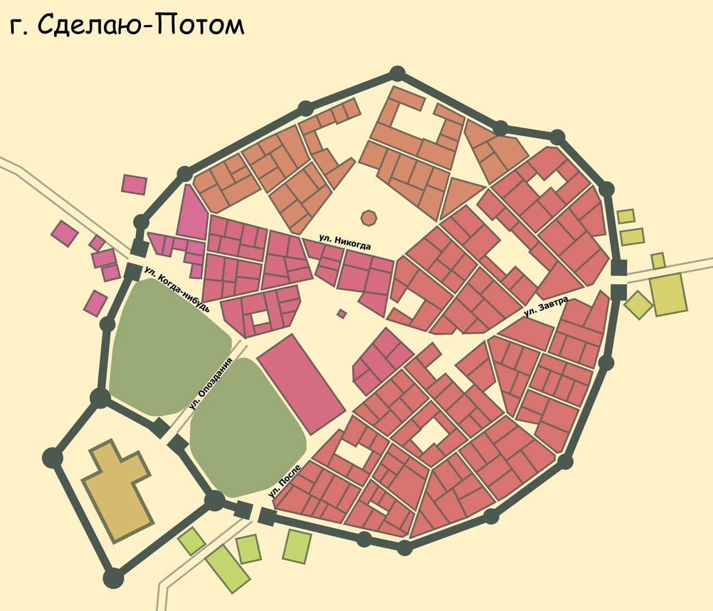

Дистрикт Энска
район города Энск 

Обращение мэра Энска
Энск большой развивающийся город, численность населения которого составляет 105 тыс. человек. В Энске условно комфортный климат. Недавно город принял участие в программе «Индексы качества городской среды». Программа «Индексы качества городской среды» - это инструмент, который направлен на выявление пространств, нуждающихся в изменениях в первую очередь. Программа оценивает, насколько город отвечает потребностям горожан. В прошлом 2019 году Энск набрал 152 балла из возможных 360. На рисунке 2 в слайдере вы можете видеть основные показатели городской среды Энска. Я, как мэр города, очень расстроен полученными результатами. В последние три года администрация города предприняла ряд шагов к улучшению социально-досуговой инфраструктуры и прилегающих пространств. В одном из районов (District 1) города построен современный развлекательный центр «Остров пиратов» с большим свободным пространством перед зданием, на котором располагается парк аттракционов. Собранная администрацией статистика показывает, что этот центр не пользуется популярностью, хотя нас уверяли, что запросы на подобные объекты городской инфраструктуры в городе очень высокие. В чем причина маленькой посещаемости «Острова пиратов»? Что можно предпринять, чтобы повысить эту посещаемость? Какие решения могут способствовать повышению комфорта этого объекта? Может быть? есть примеры решения такой проблемы в других городах? Город Энск стремится к процветанию и старается предложить своим жителям и гостям лучшие решения для благоприятного пребывания в нем! В 2019 году принято решение реконструкции парковых зон и мест отдыха. Ведь они являются сердцем города. Парковые зоны способствуют улучшению качества воздуха и являются средой обитания и развития представителей флоры и фауны. Также они способствуют сплочению городского населения и повышению качества его жизни. В Энске замечательный «Центральный парк культуры и отдыха». ЦПКиО был построен еще в начале прошлого века и был неизменным семейным местом отдыха горожан. Место отдыха расположено на территории прекрасного природного массива. Почему же сегодня у парка такая низкая посещаемость, а горожане жалуются на нехватку мест для семейного отдыха в этом районе (District 2). В чем причины? Чего не хватает парку? Почему он не может по прежнему собирать семью для отдыха под зеленью своих аллей?
Современный город - это экосистема. Мэр и администрация Энска стараются создавать в нем наиболее благоприятные условия для жизни. В районе District 3, построен новый жилой квартал «Готем Сити», позволяющий улучшить жителям города свои жилищные условия. В строительство этого района вложено много средств. И что же в итоге? Квартиры в этом ЖК не распроданы уже в течение трех лет. Даже при наличии льготных систем кредитования покупки жилья, специальных условий приобретения жилья молодыми семьями, горожане не спешат менять старую обветшалую жилплощадь на новую. В чем причина? Чего не хватает новому жилому кварталу? Какие есть проблемы? Можно ли предложить для администрации города решения, которые позволят улучшить мнение горожан о новом жилом комплексе? Есть ли примеры выхода из такой критической ситуации в других городах аналогичных Энску?
Уважаемые молодые аналитики, начинающие специалисты в сфере среды обитания, от лица мэра города Энск и всей администрации прошу Вашей помощи в решении проблем нашего города. Жду перечисления болевых точек районов, обоснованных рекомендаций и конструктивных решений. .


Были в ТРК Карибы случайно. В нем скучно. Давно хотели посетить парк аттракционов, который рядом, но пошел дождь. Пришлось зайти внутрь.
Магазины в ТРК очень старые. Одежда совсем не молодежная. Хотели угодить всем, но получилось как всегда. Музыка неприятная играет. Скучно.
Парковка очень неудобная, дорогая. Парковка должна быть для людей, стоить не как состояние Скруджа! Всем автомобилистам сочувствую:(